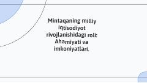

MVMintaqalarning milliy iqtisodiyotni rivojlantirishdagi o'rni va imkoniyatlari haqida taqdimot.
Ushbu qo'llanmada mintaqaning milliy iqtisodiyot rivojlanishidagi o'rni, uning iqtisodiy imkoniyatlari va strategiyalari yoritilgan. Shuningdek, hududlarning ijtimoiy ta'siri va iqtisodiy o'sishni ta'minlashdagi ahamiyati tahlil qilingan.